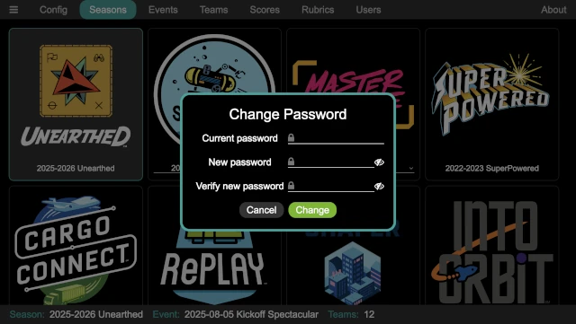

Login/Logout
Some of the pages required an authenticated user, ensuring that only those who should be in the system are able to get in (and therefore have access to the event data). If an attempt is made to access a protected page, and there is not a user logged in, the login page appears:

Enter the user name and password, then press the Login button to log into
the system. If a user has forgotten their password, and admin can use the
Users panel of the Admin page to reset
their password.
When run for the first time, and admin user is created with a user name of
admin and password of FLLRocks!. The Reset Admin Password button
on the main application to reset the admin user’s password back to the
default (in case it was changed and then forgotten).
When logged in and in a protected page, there is a user menu in the upper left corner, accessed by pressing the button:

From here, one of two things can be done:
- Change Password
The currently logged in user’s password can be changed with this button. It pops up a change password dialog:
Enter the current password and the new password (twice!), then click on
Changeto change the password.- Logout
This logs the current user out of the system. Attempts to return to a protected page results in the login panel being displayed again.